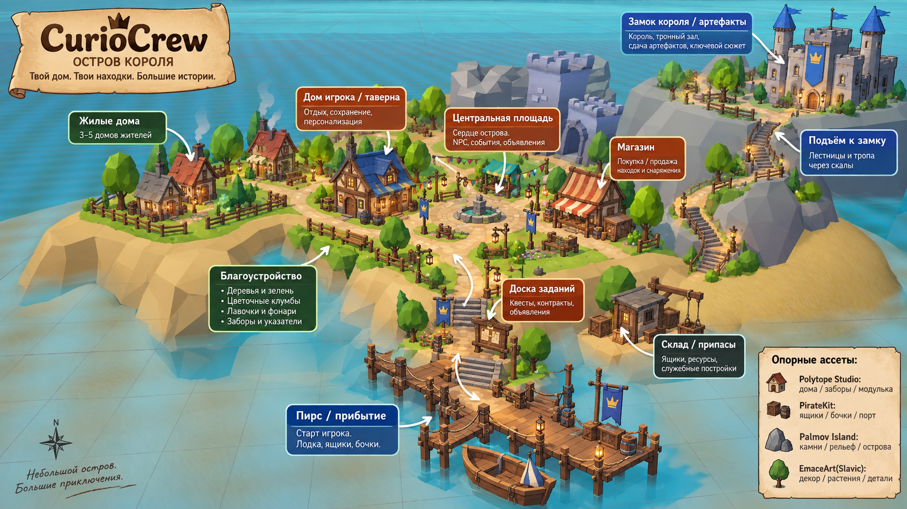

О проекте
Кооперативное low-poly приключение про странные артефакты, острова и короля
CurioCrew — это кооперативная first-person игра на 1–4 игроков с мультяшной low-poly графикой, физическим дурдомом, юмором и лёгкой примесью хоррора. В средневековом HUB король требует приносить редкие и странные артефакты.
Сеттинг
Средневековый островной HUB. Пирс, площадь, жилые дома, магазин, таверна и подъём к замку.
Главная цель альфы
Доска заданий → лодка → остров → поиск артефакта → возврат в HUB → сдача королю.
Что уже есть
Базовое движение, sprint, HeadBob, физический хват предметов, морское дно HUB, рельеф и заготовка пирса.

Концепт HUB: пирс, центральная часть городка и замок короля на скале.
Подключение…